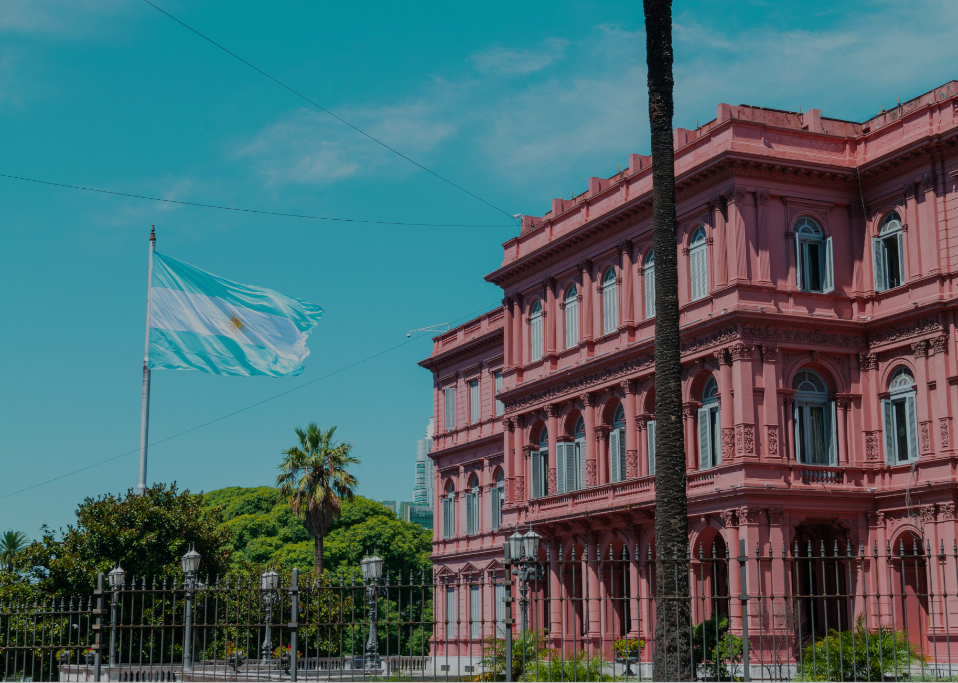
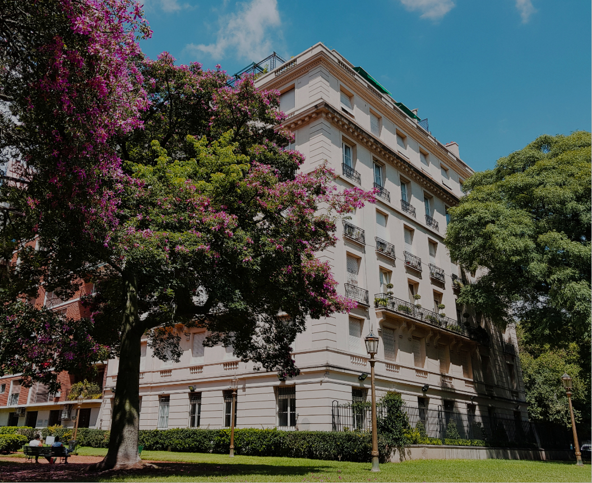
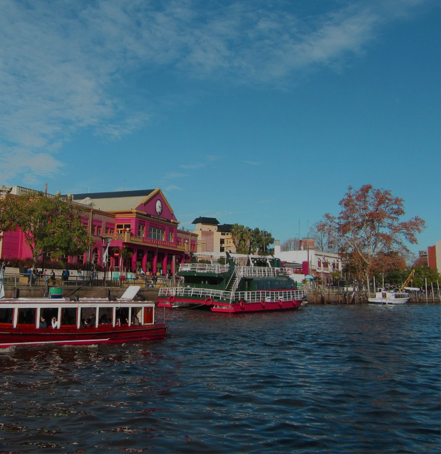
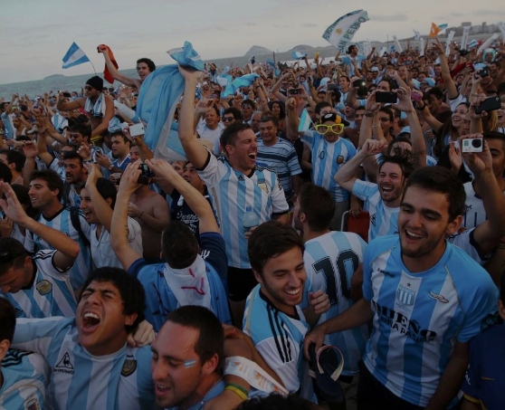
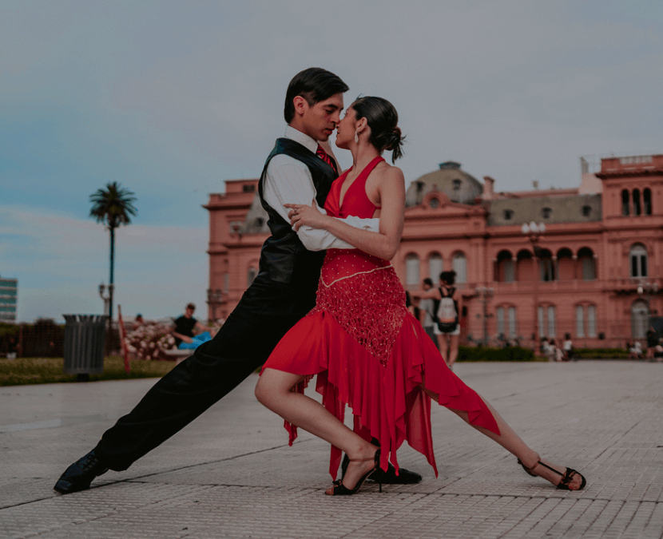

Buenos Aires a tu manera
Queremos que disfrutes de una experiencia turística a tu medida. Por eso, ofrecemos tours privados en los que elegís las paradas, la duración y el itinerario.
Nuestros guías locales te acompañarán y te llevarán a descubrir los rincones más interesantes de la ciudad, mientras te brindan información y datos curiosos sobre cada lugar.
Recorridos armados por expertos
También podés descubrir Buenos Aires con paradas definidas por un guía local experto.

Citytour clásico

Citytour BA sur

Citytour BA norte

Citytour clásico + Tigre

Tour "Pasión por el fútbol"
